長期トレンド
JKMとJEPXシステムプライスの推移グラフ
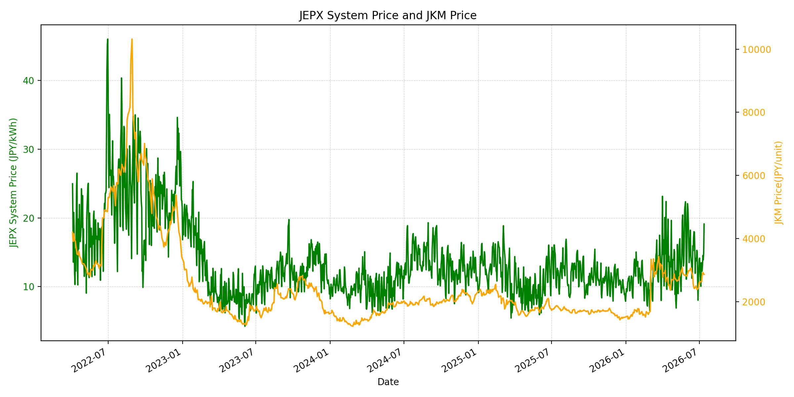
WTIの推移グラフ
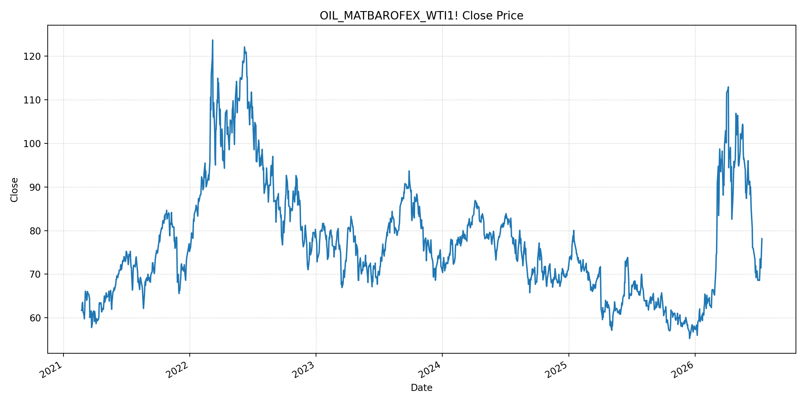
JEPXエリアプライスグラフ（直近一年分）
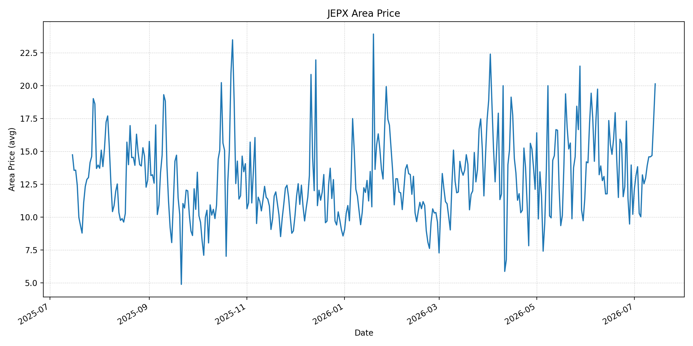
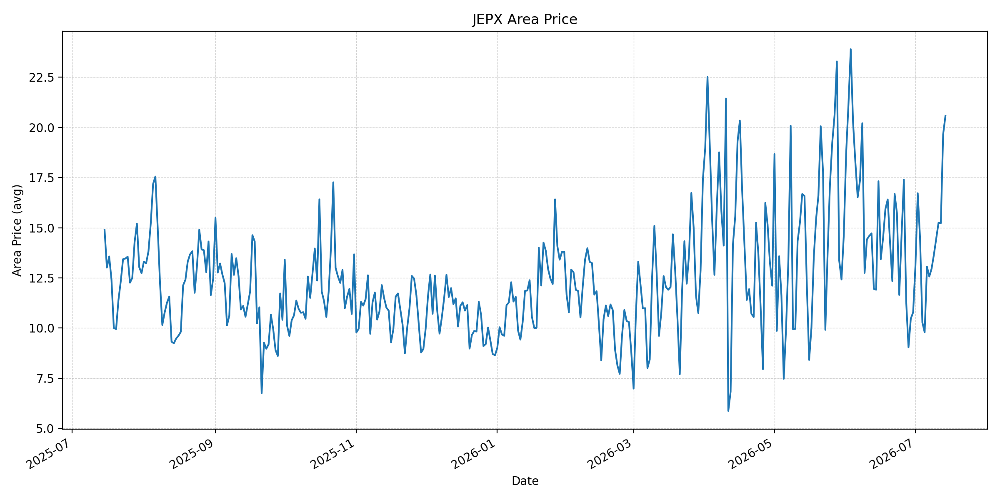
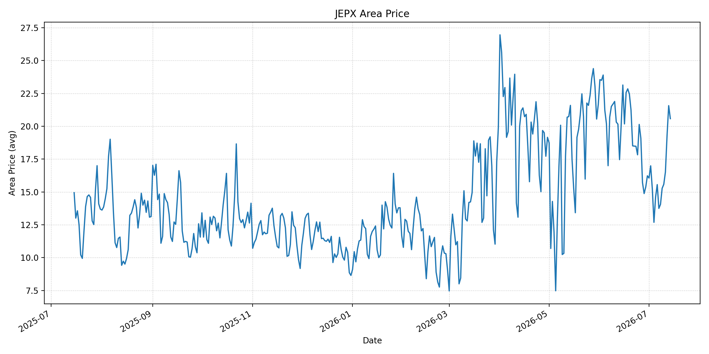
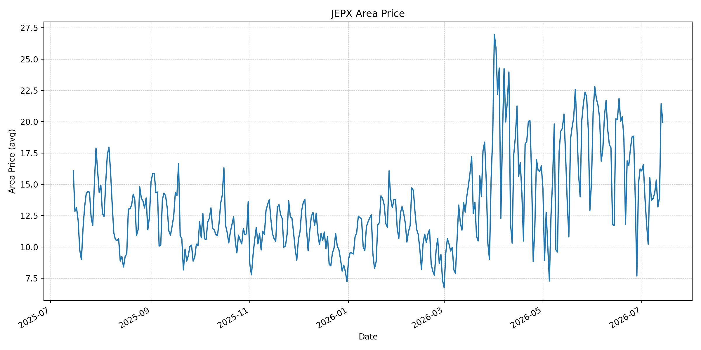
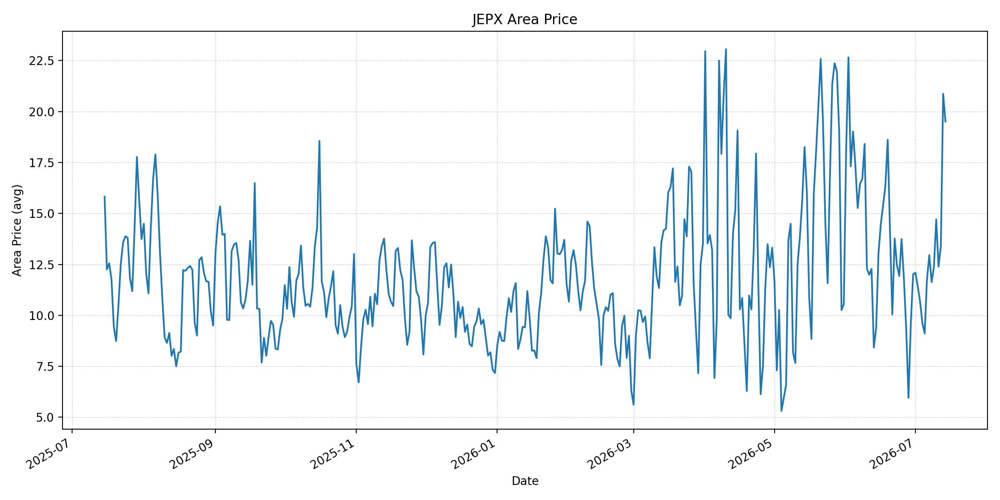
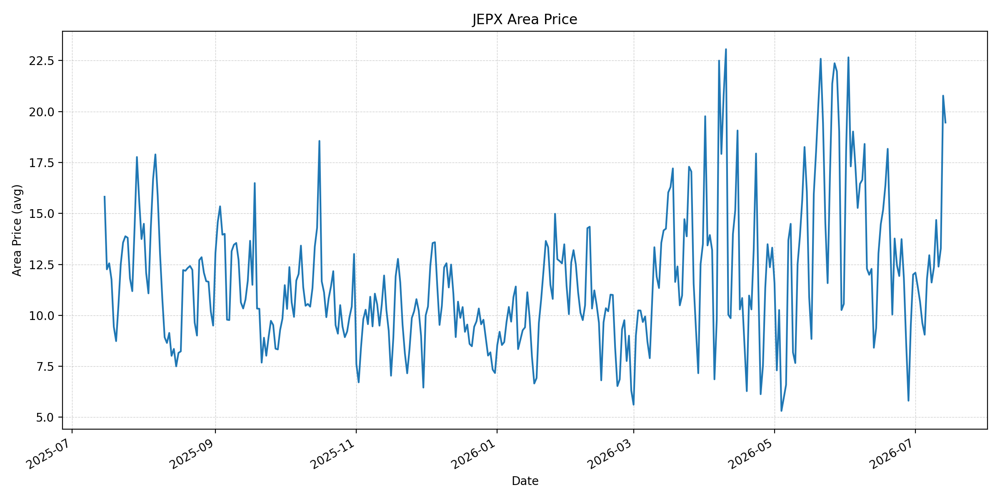
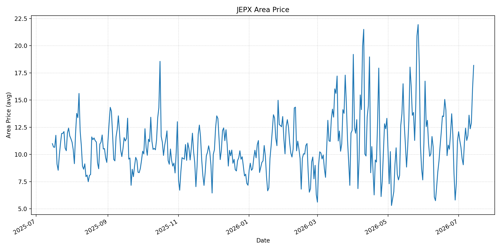
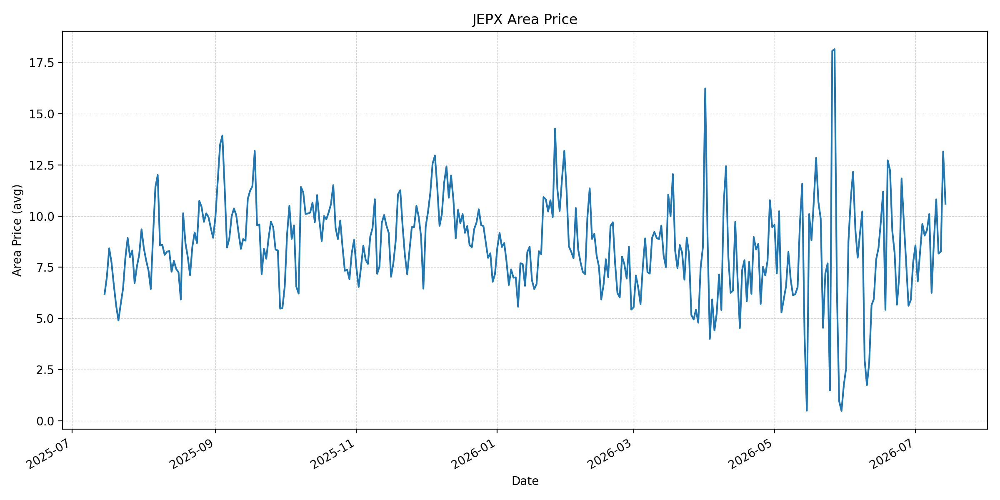
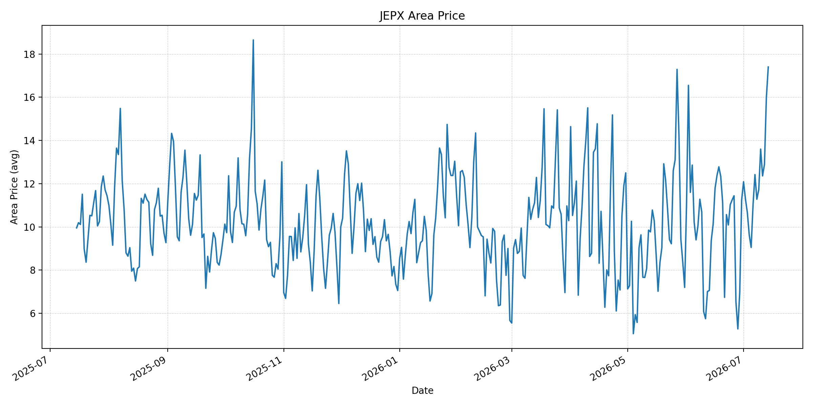
短期トレンド
JKMとJEPXシステムプライスの推移グラフ
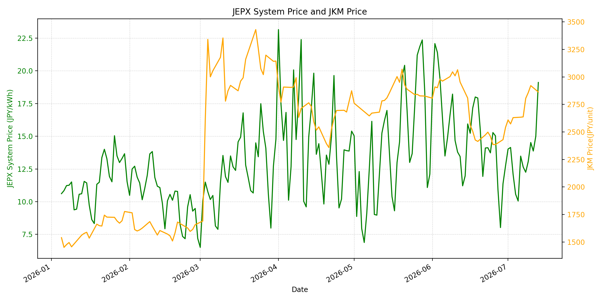
WTIの推移グラフ
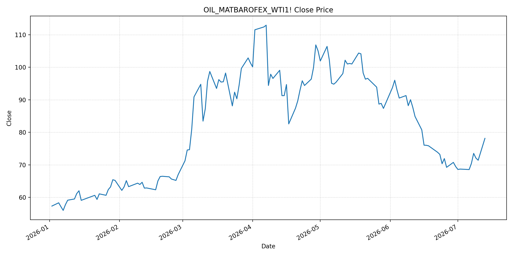
JEPXシステムプライス
JEPXは受渡日ベースの最新非空値で評価しています。最新値は 2026-07-14 分です。先週終値は 2026-07-07 時点の直近値、先月終値は 2026-06-30 時点の直近値で評価しています。
| エリア | 当日価格 | 前日価格 | 前日比（％） | 先週終値 | 先週比（％） | 先月終値 | 先月比（％） | 過去最高値 | 最高値比（％） |
|---|---|---|---|---|---|---|---|---|---|
| システム | 19.74 | 19.11 | 3.30 | 12.65 | 56.05 | 12.73 | 55.07 | 64.06 | -69.19 |
| 北海道 | 20.13 | 17.32 | 16.22 | 12.53 | 60.65 | 10.21 | 97.16 | 73.92 | -72.77 |
| 東北 | 20.58 | 19.66 | 4.68 | 12.57 | 63.72 | 10.78 | 90.91 | 84.92 | -75.76 |
| 東京 | 20.58 | 21.57 | -4.59 | 13.75 | 49.67 | 16.23 | 26.80 | 86.13 | -76.11 |
| 中部 | 19.95 | 21.44 | -6.95 | 13.72 | 45.41 | 16.23 | 22.92 | 52.06 | -61.68 |
| 北陸 | 19.51 | 20.87 | -6.52 | 12.95 | 50.66 | 12.01 | 62.45 | 46.48 | -58.03 |
| 関西 | 19.46 | 20.78 | -6.35 | 12.95 | 50.27 | 12.00 | 62.17 | 46.48 | -58.14 |
| 中国 | 18.19 | 15.97 | 13.90 | 12.42 | 46.46 | 11.26 | 61.55 | 46.48 | -60.87 |
| 四国 | 10.61 | 13.16 | -19.38 | 10.10 | 5.05 | 7.72 | 37.44 | 46.48 | -77.18 |
| 九州 | 17.40 | 15.97 | 8.95 | 12.42 | 40.10 | 11.24 | 54.80 | 40.54 | -57.08 |
LNG先物価格
最新値は 2026-07-13 の LNG(close) です。前日価格は直近非空値の 2026-07-10、先週終値は 2026-07-06 時点の直近値、先月終値は 2026-06-30 時点の直近値で評価しています。
| 当日価格 | 前日価格 | 前日比（％） | 先週終値 | 先週比（％） | 先月終値 | 先月比（％） | 過去最高値 | 最高値比（％） |
|---|---|---|---|---|---|---|---|---|
| 2863.00 | 2921.00 | -1.99 | 2634.00 | 8.69 | 2541.00 | 12.67 | 10319.00 | -72.26 |
石油先物価格
最新値は 2026-07-13 の OIL(close) です。前日価格は直近非空値の 2026-07-10、先週終値は 2026-07-06 時点の直近値、先月終値は 2026-06-30 時点の直近値で評価しています。
| 当日価格 | 前日価格 | 前日比（％） | 先週終値 | 先週比（％） | 先月終値 | 先月比（％） | 過去最高値 | 最高値比（％） |
|---|---|---|---|---|---|---|---|---|
| 78.14 | 71.41 | 9.42 | 68.55 | 13.99 | 69.50 | 12.43 | 123.70 | -36.83 |
ニュース
イラン情勢に関するニュース
- 2026年7月14日、APは、米国がイランへの新たな攻撃を開始し、トランプ大統領がホルムズ海峡通航に20％の安全通行料を求めたと報じました。イランは米国の海峡支配を拒否し、暫定和平の実効性はさらに低下しています。 参照: AP, 2026-07-14
- Guardianは、米国が3夜連続でイラン標的を攻撃し、UAEがホルムズ海峡で自国タンカー2隻がイランのミサイル攻撃を受けたと発表したと報じました。イランはバーレーン、クウェート、オマーンなどの米軍関連施設にも反撃しています。 参照: Guardian, 2026-07-14
ホルムズ海峡経由の石油・LNGに関するニュース
- APのファクトチェックは、米国とイランがともにホルムズ海峡の管理権を主張し、イランは新設の海峡当局への登録と北側航路利用を求め、米国はオマーン側の南側航路を支持していると整理しました。船舶通航は戦前の1日約130隻から直近日曜は14隻に落ち込んでいます。 参照: AP Fact Focus, 2026-07-14
- MarketWatchは、イランの海峡閉鎖宣言と米国の封鎖再開を受け、Brentが9.6％高の83.30ドル、WTIが9.4％高の78.14ドルとなり、2020年以来最大級の上昇を記録したと報じました。商業通航は52％減少し、日曜の通航は12隻程度に縮小したとされています。 参照: MarketWatch, 2026-07-14
ホルムズ海峡経由でない石油・LNGに関するニュース
- 過去24時間で、非ホルムズの新規増産、代替パイプライン、または非ホルムズLNG供給を直接変更する強い新規記事は確認できませんでした。市場材料は、ホルムズ海峡の通航管理と米イランの軍事応酬に集中しています。 参照: WSJ, 2026-07-14
- Guardianは、OPECが2026年の石油需要見通しを3回連続で下方修正した一方、ホルムズ情勢の悪化で油価が急騰したと報じました。需要面の弱さは非ホルムズ供給の緩衝材ですが、短期の地政学リスクが優勢です。 参照: Guardian, 2026-07-14
日本国内のイラン戦争に関係するニュース
- 過去24時間で、JEPX制度、国内電力需給ルール、または日本政府の対イラン戦争関連対策を直接変更する主要な新規公表は確認できませんでした。
- 関連する国内材料として、経済産業省は2026年5月20日、2026年度夏季は全エリアで安定供給に最低限必要な予備率3％を確保できるため節電要請を実施しないと発表しています。一方で、国際情勢の変化、異常気象、火力発電所の集中はリスクとして明記されています。 参照: 経済産業省, 2026-05-20
インサイト
ニュース事項による日本の電力市場への影響（短期：数日〜1週間）
- JEPXシステムプライスは 19.74 円/kWhで前日比 3.30%、先週比 56.05% と高止まりしています。北海道 20.13 円/kWh、東北・東京 20.58 円/kWhと東日本も高く、燃料リスクと夏季需給の同時圧力が続いています。
- OILは 78.14 で前回非空値比 9.42%、先週比 13.99% と急伸しました。ホルムズ通航料、封鎖、船舶交通減少のニュースは、数日〜1週間の燃料費・保険料プレミアムを直接押し上げます。
- LNGは 2863.00 で前回非空値比 -1.99% ですが、先週比 8.69% と高水準です。通航隻数の急減とLNG船への警戒が続く限り、燃料データが一時的に下がってもJEPXの下値は限られます。
ニュース事項による日本の電力市場への影響（長期：1ヶ月〜半年）
- OPEC需要見通しの下方修正は、長期の油価上昇を抑える材料です。ただし、OILは過去最高値比 -36.83% まで戻しており、ホルムズの管理権争いが続けば、燃料価格より物流・保険コストが長引く可能性があります。
- JEPXシステム価格は先月比 55.07%、北海道は 97.16%、東北は 90.91% 上昇しています。国内需給が安定供給最低限の予備率を確保していても、国際燃料調達リスクが高い局面では地域価格のばらつきが拡大しやすいです。
- 完全閉鎖が回避される場合でも、米国・イラン双方が通航料や航路を主張する構図は1ヶ月〜半年の不確実性です。LNGは過去最高値比 -72.26% と歴史的には低位ですが、調達先分散と船腹確保のコストが電力市場へ残ります。